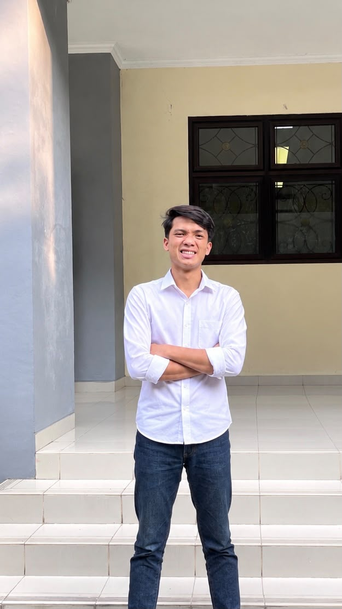

My Goal
Terus mengembangkan kemampuan teknologi, mendapatkan pengalaman melalui proyek nyata, dan mempersiapkan diri untuk dunia profesional.
HELLO, I'M
Saya tertarik mengeksplorasi teknologi, membangun solusi digital, dan mengembangkan kemampuan di bidang networking, data analysis, geoinformatika, serta Internet of Things.

01 / ABOUT ME
Saya adalah mahasiswa Teknik Informatika di UPN Veteran Yogyakarta. Saya senang mempelajari teknologi dan mengerjakan proyek yang menggabungkan software, hardware, serta pemecahan masalah nyata.
Terus mengembangkan kemampuan teknologi, mendapatkan pengalaman melalui proyek nyata, dan mempersiapkan diri untuk dunia profesional.
02 / WHAT I WORK WITH
Teknologi dan tools yang pernah saya pelajari dan gunakan dalam perkuliahan maupun proyek.
C++ · Python · Java
HTML · CSS · JavaScript · PHP
MySQL · SQLite
Pandas · NumPy · Matplotlib · Scikit-learn
TCP/IP · VLSM · VLAN · Routing
ESP32 · Sensors · MQTT · Blynk
03 / SELECTED WORK
Beberapa proyek yang saya kerjakan dan kembangkan.
Sistem monitoring kelembapan tanah dan penyiraman otomatis berbasis ESP32, sensor, relay, dan MQTT.
GitHub ↗Website konseling online dengan fitur layanan dan informasi untuk mendukung kesehatan mahasiswa.
GitHub ↗Analisis data perjalanan kendaraan dan konsumsi bahan bakar menggunakan Python.
GitHub ↗Perancangan jaringan dengan subnetting, VLAN, routing, dan simulasi Cisco Packet Tracer.
GitHub ↗04 / MY JOURNEY
Teknik Informatika · Undergraduate
2024 — Present05 / LET'S CONNECT
Terbuka untuk kolaborasi, diskusi, kesempatan magang, dan pengalaman baru. Jangan ragu untuk menghubungi saya.